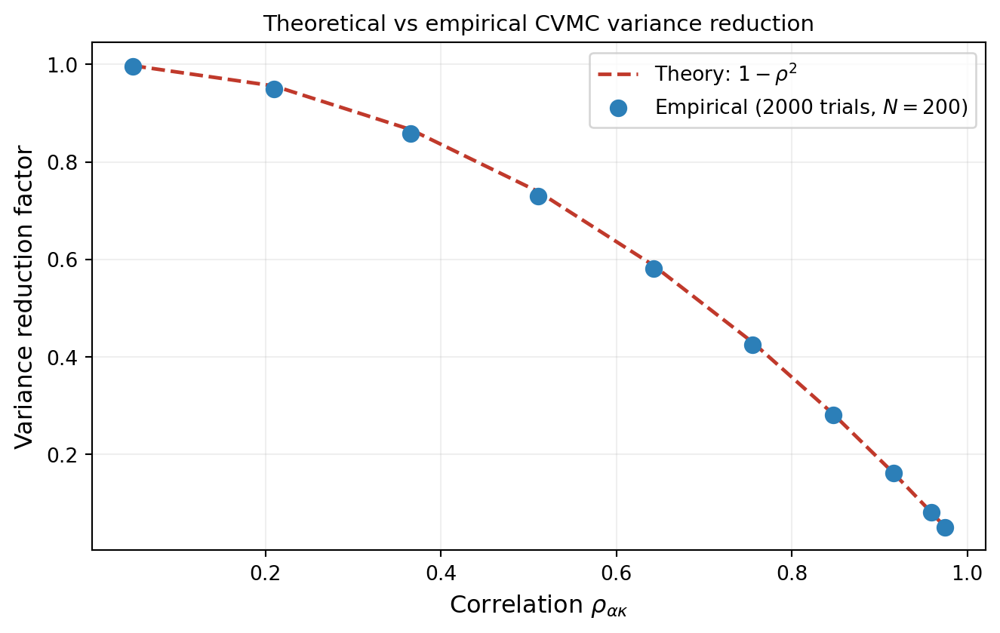

import numpy as np
import matplotlib.pyplot as plt
from pyapprox.util.backends.numpy import NumpyBkd
from pyapprox.benchmarks.instances.multifidelity.tunable_ensemble import (
tunable_ensemble_3model,
)
bkd = NumpyBkd()
# Correlation is controlled by theta1: theta1 = pi/2 gives rho ~ 0,
# theta1 -> 0 gives rho -> 1.
theta1_values = np.linspace(0.05, np.pi / 2 * 0.99, 10)
N = 200
n_trials = 2000
empirical_reductions = []
theoretical_reductions = []
for theta1 in theta1_values:
np.random.seed(0)
bm = tunable_ensemble_3model(bkd, theta1=theta1)
hf_model = bm.models()[0]
lf_model = bm.models()[1]
variable = bm.prior()
cov_mat = bkd.to_numpy(bm.ensemble_covariance()[:2, :2])
rho = cov_mat[0, 1] / np.sqrt(cov_mat[0, 0] * cov_mat[1, 1])
eta_opt = -cov_mat[0, 1] / cov_mat[1, 1]
mu_kappa = float(bkd.to_numpy(bm.ensemble_means())[1, 0])
mc_vars = np.empty(n_trials)
cv_vars = np.empty(n_trials)
for i in range(n_trials):
np.random.seed(i + 1)
samples = variable.rvs(N)
v_alpha = bkd.to_numpy(hf_model(samples)).ravel()
v_kappa = bkd.to_numpy(lf_model(samples)).ravel()
mc_vars[i] = v_alpha.mean()
cv_vars[i] = v_alpha.mean() + eta_opt * (v_kappa.mean() - mu_kappa)
empirical_reductions.append(np.var(cv_vars) / np.var(mc_vars))
theoretical_reductions.append(1 - rho**2)
empirical_reductions = np.array(empirical_reductions)
theoretical_reductions = np.array(theoretical_reductions)Control Variate Monte Carlo: Analysis
PyApprox Tutorial Library
Deriving the optimal control variate weight, the variance reduction formula, and unbiasedness of the CVMC estimator.
TipDownload Notebook
Learning Objectives
After completing this tutorial, you will be able to:
- Prove that the CVMC estimator is unbiased for any choice of \(\eta\)
- Derive the optimal control variate weight \(\eta^*\) by minimizing estimator variance
- Show that the minimum variance reduction factor is \(1 - \rho^2_{\alpha\kappa}\)
- Verify the theoretical variance reduction numerically against empirical results
Prerequisites
Complete Control Variate Concept and Estimator Accuracy and MSE before this tutorial.
Setup and Notation
Let \(f_\alpha : \mathbb{R}^{d_\theta} \to \mathbb{R}\) be a high-fidelity model and \(f_\kappa : \mathbb{R}^{d_\theta} \to \mathbb{R}\) a low-fidelity model. We draw \(N\) independent samples \(\boldsymbol{\theta}^{(1)}, \dots, \boldsymbol{\theta}^{(N)}\) from the prior \(p(\boldsymbol{\theta})\) and denote the resulting sample means
\[ \hat{\mu}_\alpha = \frac{1}{N}\sum_{k=1}^N f_\alpha(\boldsymbol{\theta}^{(k)}), \qquad \hat{\mu}_\kappa = \frac{1}{N}\sum_{k=1}^N f_\kappa(\boldsymbol{\theta}^{(k)}). \]
We write \(\mu_\alpha = \mathbb{E}_\theta[f_\alpha]\), \(\mu_\kappa = \mathbb{E}_\theta[f_\kappa]\), \(\sigma^2_\alpha = \mathbb{V}_\theta[f_\alpha]\), \(\sigma^2_\kappa = \mathbb{V}_\theta[f_\kappa]\), and \(C_{\alpha\kappa} = \mathrm{Cov}_\theta(f_\alpha, f_\kappa)\) for the true (population) moments. The correlation between models is \(\rho_{\alpha\kappa} = C_{\alpha\kappa} / (\sigma_\alpha \sigma_\kappa)\).
The CVMC estimator is
\[ \hat{\mu}_\alpha^{\text{CV}} = \hat{\mu}_\alpha + \eta \left(\hat{\mu}_\kappa - \mu_\kappa\right) \tag{1}\]
where \(\mu_\kappa\) is assumed known exactly and \(\eta \in \mathbb{R}\) is a free parameter.
Unbiasedness
Claim: \(\hat{\mu}_\alpha^{\text{CV}}\) is an unbiased estimator of \(\mu_\alpha\) for any \(\eta\).
Proof:
\[ \mathbb{E}\!\left[\hat{\mu}_\alpha^{\text{CV}}\right] = \mathbb{E}[\hat{\mu}_\alpha] + \eta\left(\mathbb{E}[\hat{\mu}_\kappa] - \mu_\kappa\right) = \mu_\alpha + \eta \cdot 0 = \mu_\alpha. \qquad \square \]
The correction term has expectation zero because \(\hat{\mu}_\kappa\) is an unbiased estimator of \(\mu_\kappa\). This holds for any \(\eta\), so we are free to choose \(\eta\) purely to minimize variance.
Variance of the CVMC Estimator
Using the variance-of-sums formula \(\mathbb{V}[X + Y] = \mathbb{V}[X] + \mathbb{V}[Y] + 2\,\mathrm{Cov}(X, Y)\):
\[ \mathbb{V}\!\left[\hat{\mu}_\alpha^{\text{CV}}\right] = \mathbb{V}[\hat{\mu}_\alpha] + \eta^2 \mathbb{V}[\hat{\mu}_\kappa] + 2\eta\,\mathrm{Cov}(\hat{\mu}_\alpha, \hat{\mu}_\kappa). \tag{2}\]
The sample means inherit the population moments scaled by \(1/N\):
\[ \mathbb{V}[\hat{\mu}_\alpha] = \frac{\sigma^2_\alpha}{N}, \quad \mathbb{V}[\hat{\mu}_\kappa] = \frac{\sigma^2_\kappa}{N}, \quad \mathrm{Cov}(\hat{\mu}_\alpha, \hat{\mu}_\kappa) = \frac{C_{\alpha\kappa}}{N}. \]
Substituting and factoring out \(\sigma^2_\alpha / N\):
\[ \mathbb{V}\!\left[\hat{\mu}_\alpha^{\text{CV}}\right] = \frac{\sigma^2_\alpha}{N} \left( 1 + \eta^2 \frac{\sigma^2_\kappa}{\sigma^2_\alpha} + 2\eta \frac{C_{\alpha\kappa}}{\sigma^2_\alpha} \right). \tag{3}\]
Optimal Weight \(\eta^*\)
The right-hand side of Equation 3 is a quadratic in \(\eta\) with positive leading coefficient. It has a unique minimum. Setting the derivative with respect to \(\eta\) to zero:
\[ \frac{d}{d\eta}\mathbb{V}\!\left[\hat{\mu}_\alpha^{\text{CV}}\right] = \frac{\sigma^2_\alpha}{N}\left(2\eta \frac{\sigma^2_\kappa}{\sigma^2_\alpha} + 2\frac{C_{\alpha\kappa}}{\sigma^2_\alpha}\right) = 0 \]
\[ \implies \eta^* = -\frac{C_{\alpha\kappa}}{\sigma^2_\kappa}. \tag{4}\]
Because both \(\hat{\mu}_\alpha\) and \(\hat{\mu}_\kappa\) are computed from the same \(N\) samples, \(\mathrm{Cov}(\hat{\mu}_\alpha, \hat{\mu}_\kappa) = C_{\alpha\kappa}/N\) and \(\mathbb{V}[\hat{\mu}_\kappa] = \sigma^2_\kappa/N\), so Equation 4 also equals
\[ \eta^* = -\frac{\mathrm{Cov}(\hat{\mu}_\alpha, \hat{\mu}_\kappa)}{\mathbb{V}[\hat{\mu}_\kappa]}. \]
This is the population regression coefficient of \(\hat{\mu}_\alpha\) on \(\hat{\mu}_\kappa\) — the CVMC correction is a regression adjustment.
Minimum Variance and Variance Reduction Factor
Substituting \(\eta^*\) into Equation 3:
\[ \mathbb{V}\!\left[\hat{\mu}_\alpha^{\text{CV}}\right]\bigg|_{\eta=\eta^*} = \frac{\sigma^2_\alpha}{N}\left( 1 + \frac{C_{\alpha\kappa}^2}{\sigma^2_\kappa \sigma^2_\alpha} - 2\frac{C_{\alpha\kappa}^2}{\sigma^2_\kappa \sigma^2_\alpha} \right) = \frac{\sigma^2_\alpha}{N}\left(1 - \frac{C_{\alpha\kappa}^2}{\sigma^2_\alpha \sigma^2_\kappa}\right). \]
Recognizing \(C_{\alpha\kappa}^2 / (\sigma^2_\alpha \sigma^2_\kappa) = \rho^2_{\alpha\kappa}\):
\[ \boxed{ \mathbb{V}\!\left[\hat{\mu}_\alpha^{\text{CV}}\right] = \frac{\sigma^2_\alpha}{N}\left(1 - \rho^2_{\alpha\kappa}\right) = \mathbb{V}[\hat{\mu}_\alpha]\left(1 - \rho^2_{\alpha\kappa}\right). } \tag{5}\]
The variance reduction factor \(\gamma = 1 - \rho^2_{\alpha\kappa}\) depends only on the correlation between models, not on sample size or the individual model variances.
NoteSign of \(\eta^*\)
When \(C_{\alpha\kappa} > 0\) (positively correlated models), \(\eta^* < 0\). Positive MC errors in \(\hat{\mu}_\alpha\) tend to coincide with positive MC errors in \(\hat{\mu}_\kappa\), so subtracting a scaled version of the latter cancels part of the former.
Numerical Verification
We verify Equation 5 using a tunable two-model ensemble where the correlation \(\rho_{\alpha\kappa}\) is controlled by a single parameter \(\theta_1\).
from pyapprox.tutorial_figures._cv_acv import plot_cv_verification
# Recover rho values for x-axis
rho_vals = np.sqrt(1 - theoretical_reductions)
fig, ax = plt.subplots(figsize=(7, 4.5))
plot_cv_verification(rho_vals, theoretical_reductions, empirical_reductions,
n_trials, N, ax)
plt.tight_layout()
plt.show()
Discussion
The role of \(\eta^*\) versus an estimated \(\hat{\eta}\)
In practice, the population moments \(C_{\alpha\kappa}\) and \(\sigma^2_\kappa\) are unknown and \(\eta^*\) must be estimated from samples. Using a sample-based \(\hat{\eta}\) introduces a small bias and slightly inflates the variance, but the effect vanishes as \(N \to \infty\). The API Cookbook covers how PyApprox handles this in the API.
Extension to other statistics
The derivation above treats the mean estimator. For variance estimation, the optimal \(\eta^*\) and the resulting variance reduction ratio depend not just on \(\rho_{\alpha\kappa}\) but also on higher-order cross-moments of \(f_\alpha\) and \(f_\kappa\). The same general structure — unbiasedness for free, optimality by differentiating a quadratic — applies, but the algebra is more involved. See ACV Covariances for the general formulas.
Connection to regression
The CVMC correction \(\eta^*(\hat{\mu}_\kappa - \mu_\kappa)\) is exactly the least-squares regression of the MC error \(\hat{\mu}_\alpha - \mu_\alpha\) onto \(\hat{\mu}_\kappa - \mu_\kappa\). This geometric view generalizes naturally to multiple low-fidelity models (see General ACV), where \(\eta^*\) becomes a vector and the variance reduction is \(1 - \mathbf{R}^2\), the \(R^2\) of the multivariate regression.
Key Takeaways
- CVMC is unbiased for any \(\eta\); we choose \(\eta\) only to minimize variance
- The optimal weight is \(\eta^* = -C_{\alpha\kappa} / \sigma^2_\kappa\), the population regression coefficient
- The minimum variance reduction factor is \(1 - \rho^2_{\alpha\kappa}\), depending only on model correlation
- The derivation generalizes to other statistics and to multiple low-fidelity models
Exercises
Starting from Equation 2, verify algebraically that substituting \(\eta^*\) from Equation 4 yields Equation 5.
Show that when \(\eta = 0\) the CVMC estimator reduces to plain MC and \(\gamma = 1\). Show that \(\gamma < 1\) for all \(\eta \neq 0\) and all \(\rho \neq 0\).
Suppose you use the sample covariance \(\hat{C}_{\alpha\kappa}\) in place of the true \(C_{\alpha\kappa}\) to compute \(\hat{\eta}\). Is the resulting estimator still unbiased? (Hint: \(\hat{\eta}\) is now a function of the same samples used in \(\hat{\mu}_\alpha\) and \(\hat{\mu}_\kappa\).)
(Challenge) Extend the variance derivation to the case of two control variates \(f_{\kappa_1}\) and \(f_{\kappa_2}\) with weights \(\eta_1\) and \(\eta_2\). Write the optimal weights in matrix form and identify the resulting variance reduction.
References
- [LMWOR1982] S.S. Lavenberg, T.L. Moeller, P.D. Welch. Statistical results on control variables with application to queueing network simulation. Operations Research, 30(1):182–202,